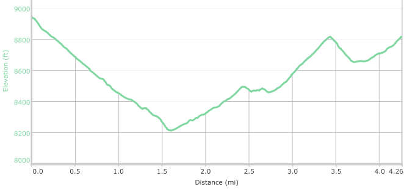

Hike New Mexico
w/ Tom & Ken
Borrego/Bear Wallow Trail



- Aug 27, 2015: Stopping for a shady break
- Aug 27, 2015: Going down - the easy part!
- Aug 27, 2015: I always lead the pack!
- Aug 27, 2015: Looking down on fellow hikers
- Aug 27, 2015: No, no -THAT way!
- Aug 27, 2015: The refreshing half-way point
- https://www.flickr.com/photos/139088815@N08/27309581093/in/photostream/
- https://www.flickr.com/photos/139088815@N08/27888250766/in/photostream/
- https://www.flickr.com/photos/139088815@N08/27888281576/in/photostream/
- https://www.flickr.com/photos/139088815@N08/27922623615/in/photostream/
- https://www.flickr.com/photos/139088815@N08/27922576425/in/photostream/
- https://www.flickr.com/photos/139088815@N08/27309599163/in/photostream/
The Borrego - Bear Wallow hike is a loop made of two trails connected by the Winsor Trail at Tesuque Creek. While there are not many "long" views of the area, the shade of fir, aspen and pine makes for a lovely hike. This is capped off by a nice creekside walk along the Tesuque. The trail is aptly described in Day Hikes In The Santa Fe Area by the Northern New Mexico Group of the Sierra Club. Explore NM also has an informative site, along with other trail apps.